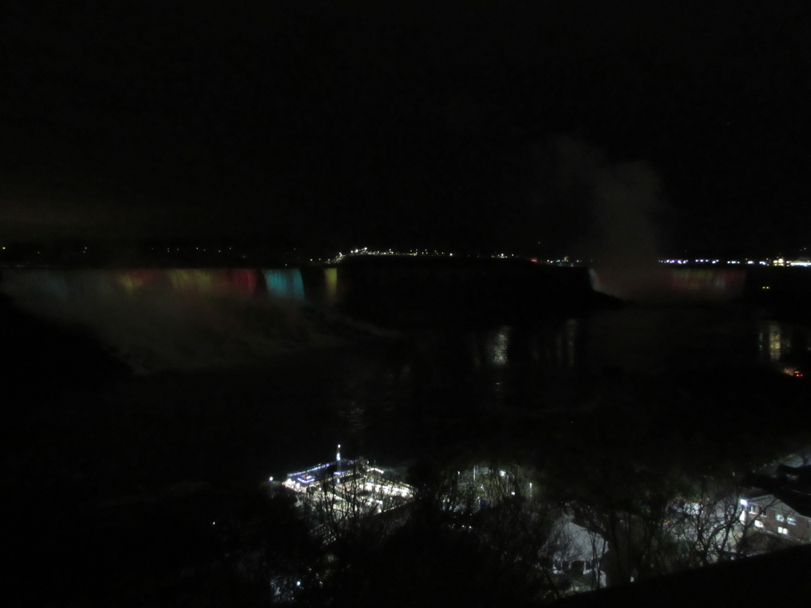

ナイアガラの滝の1番の魅力は平均として毎分110,000㎥を超える大量の水が流れていることです！さらに滝の力強さと美しさと周りの絶景風景に引かれて多くの観光客が集まります！
URL
https://www.nps.gov/yell/index.htm
場所
カナダとアメリカ合衆国の国境に位置してる
面積
209.73 ㎢（北海道２.４個分）
歴史
18,000年前は高さ２〜３メートルの氷で覆われていた場所がが何千年もかけて溶け自然の力によって今のナイアガラの滝ができた。
有名な動物
ナイアガラ川流域はカナダやアメリカの主要自然保護団体から重要野生鳥生息地に指定されていて多くの野生鳥が集まります。さらにリスや狐などの哺乳類から蛇などの爬虫類まで数えきれないほどの野生動物が生息しています。
特徴
・1881年に最初の水力発電所がナイアガラ川に建設された
・全米で見ると４番目ぐらいに大きな生産量を誇る水力発電所
・ナイアガラの滝はカナダ滝（ホースシュー・フォールズ）、アメリカ滝とブライダベール滝の３つに分けることができる